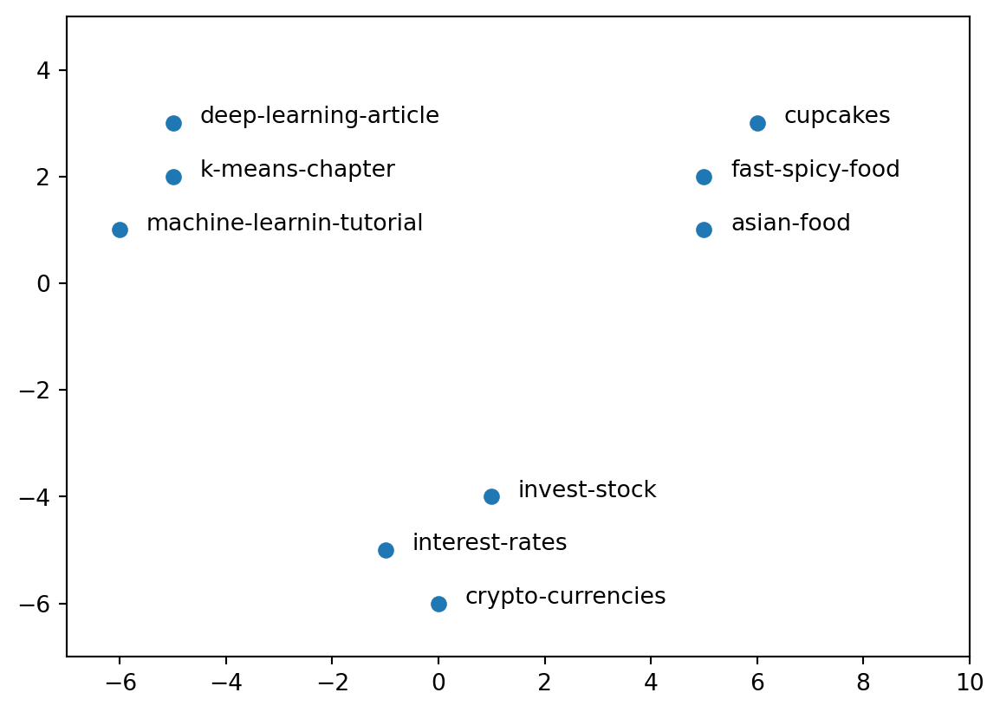

Introduction
Transforming document context into vectors provide several advantages such as:
- calculate similarity between documents with vector distance
- find similar groups of documents by applying a cluster algorithm
- get a visual representation of similar documents with dimensionality reduction
There are several designs to represent a document as a vector, one of the simplest is a word-count per document.
Also how to measure similarity between document vectors.
Transforming a Document into a Vector
In this approach, each vector position represents a words and each value a frequency count (word-count).
This way the text below:
I like to eat hamburguer.
Buying peperoni hamburguer to eat.Is mapped as:
| I | like | to | eat | hamburguer | buying | peperoni |
|---|---|---|---|---|---|---|
| 1 | 1 | 2 | 2 | 2 | 1 | 1 |
Similarity Among Documents
Using the idea describe above, several documents can be mapped as vectors and placed in a table such as:
| document | I | do | play | weekend | ball | peperoni | sometimes | … |
|---|---|---|---|---|---|---|---|---|
| D1 | 1 | 2 | 2 | 0 | 0 | 2 | 7 | … |
| D2 | 12 | 0 | 0 | 2 | 0 | 0 | 11 | … |
| D3 | 8 | 12 | 0 | 0 | 1 | 1 | 9 | … |
| … | … | … | … | … | … | … | … | … |
Given that documents are represented as vector, the distance between 2 vectors can be calculated as:
Euclidean distance \(dist(D1, D2)=\sqrt{ \sum_{i=1}^{n} (D1 - D2)^2 }\)
Cosine similarity \(\cos(\theta)=\frac{D1 \cdot D2}{\left \| D1 \right \| \left \| D2 \right \|}\) \(\cos(\theta)=\frac{ \sum_{i=1}^{n} D1_i D2_i }{ \sqrt{ \sum_{i=1}^{n} {D1_i}^2 } \cdot \sqrt{ \sum_{i=1}^{n} {D2_i}^2 } }\)
PS: Prefer cosine similarity is preferred since it works well even with vectors with different magnitude.
PS: Consider converting document vector to unitary vector before using with euclidean distance
Find Document Clusters
K-Means with Euclidean Distance
Euclidean distance provides a distance function between 2 document-vectors D1 and D2 by considering each dimension distance separately.
Besides an average vector can be calculated by averaging a dataset of document vectors in a table \(DT\).
\(DT=\frac{ \sum_{i=1}^{n} DT_i }{ n }\)
Given the documents:
| document | I | do | play | weekend | ball | peperoni | sometimes |
|---|---|---|---|---|---|---|---|
| D1 | 1 | 2 | 2 | 0 | 0 | 2 | 7 |
| D2 | 12 | 0 | 0 | 2 | 0 | 0 | 11 |
| D3 | 8 | 12 | 0 | 0 | 1 | 1 | 9 |
The sum of those documents are:
| I | do | play | weekend | ball | peperoni | sometimes | |
|---|---|---|---|---|---|---|---|
| sum | 21 | 14 | 2 | 2 | 1 | 3 | 27 |
with n = 3 (number of documents) then average vector is:
| I | do | play | weekend | ball | peperoni | sometimes | |
|---|---|---|---|---|---|---|---|
| average | 7 | 4.667 | 0.667 | 0.667 | 0.333 | 1 | 9 |
Given a enclidean distance and average functions above, then a cluster mechanism can be built on top of a cluster algorithm such as K-means whose standard steps are described as:
- \(K\) initial vectors are randomly generated inside data range as centroids
- Each document-vector is associated to the closest centroid using the distance function (K clusters)
- Inside each cluster \(K_i\), a new centroid is calculated with average vector function
- Repeat steps 2 and 3 until the distance of new centroid’s locations from original is less than a threshold
Visual Representation with Dimensionality Reduction
Visualising documents in 2 dimensions can provide a graphical and intuitive way to communicate how or perhaps why groups of documents are created.
First each document vector need to be mapped to a 2 dimension vector so it can be visualised with PCA (principal component analysis).
Details on PCA can be found here.
With the 2D document vectors, one can come up with a visualisation such as scatterplot to present to an audience or gain more insigths on the data:
Conclusion
Learning how to convert document to vector can help perform analysis more quickly. Some applications are cited above however there are more, for instance, document-vectors that belong to the same category such as finance, movies, tech, etc can be summed up together to describe a vector information of that group and perhaps help classify another document to the nearest category using a distance function.
The new document to be classified just needs to be converted to a vector and then this vector needs to be compared by distance to the document-category vectors.
Another application is to detect plagiarism, by measuring the distance between a given input document to a dataset of known documents.